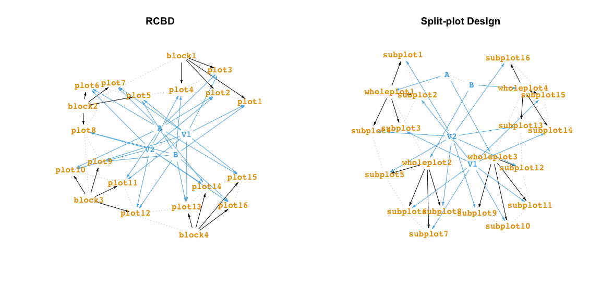

Overview
Software for constructing experimental design generally utilise: (1) functions that are specific for creating particular experimental designs (e.g. agricolae::design.lsd() creates a Latin Square Design) or (2) where it is general, requires an input (usually a data frame) with the initial experimental design structure (e.g. AlgDesign::optBlock() or most optimal designs). Both of these approaches assume that the user is well acquainted with the experimental structure and objective, but in practice these are the greatest bottleneck before even getting to think about the randomisation process.
üí° The big idea with the edibble R-package is that you specify an experimental design by being more expressive about the experiment. The edibble code for constructing experimental design should evoke a rough idea about the experimental layout even to a layperson.
üéØ The grand goal for the edibble project is to define the grammar of experimental design and implement it.
Take for an example, the classic split-plot design that contains 4 wholeplots with 4 sub plots within each wholeplot (so 16 subplots in total). There are 2 treatment factors: fertilizer (with levels A and B) and variety (with levels V1 and V2). Each level of the fertilizer is randomly applied to two wholeplots. Each level of variety is randomly applied to two subplots within each wholeplot.
In edibble, we can code the above split-plot design as below. You can see it outputs a data frame (or tibble) called edibble. The name origin of edibble is a play on tibble and can be thought of as tibble output for experimental design.
library(edibble)
set.seed(2020) # üî•ü¶†üè†üò±
spdes <- start_design("Split-plot Design") %>%
set_units(wholeplot = 4,
subplot = nested_in(wholeplot, 4)) %>%
set_trts(fertilizer = c("A", "B"),
variety = c("V1", "V2")) %>%
allocate_trts(fertilizer ~ wholeplot,
variety ~ subplot) %>%
randomise_trts()Above object contains the intermediate construct of an experimental design (called edbl_nexus). When you are ready to serve your design, you can get the table output (called edbl_df) by using serve_table as below.
serve_table(spdes)
#> # An edibble: 16 x 4
#> wholeplot subplot fertilizer variety
#> <unit(4)> <unit(16)> <trt(2)> <trt(2)>
#> 1 wholeplot1 subplot1 A V2
#> 2 wholeplot1 subplot2 A V2
#> 3 wholeplot1 subplot3 A V1
#> 4 wholeplot1 subplot4 A V1
#> 5 wholeplot2 subplot5 B V2
#> 6 wholeplot2 subplot6 B V1
#> 7 wholeplot2 subplot7 B V1
#> 8 wholeplot2 subplot8 B V2
#> 9 wholeplot3 subplot9 A V1
#> 10 wholeplot3 subplot10 A V2
#> 11 wholeplot3 subplot11 A V2
#> 12 wholeplot3 subplot12 A V1
#> 13 wholeplot4 subplot13 B V1
#> 14 wholeplot4 subplot14 B V2
#> 15 wholeplot4 subplot15 B V1
#> 16 wholeplot4 subplot16 B V2Once you get the rough idea of how edibble specifies design, you should be roughly be able to visualise what the experimental design layout is just from looking at the code alone. Take another example below. Can you see what the design is?
rcbd <- start_design("RCBD") %>%
set_units(block = 4,
plot = nested_in(block, 4)) %>%
set_trts(fertilizer = c("A", "B"),
variety = c("V1", "V2")) %>%
allocate_trts(fertilizer:variety ~ plot) %>%
randomise_trts()The above design is an example of a Randomised Complete Block Design. If you change the unit names from block to wholeplot and plot to subplot, it looks like the Split-plot Design, so what differs here aside from the unit names? Yes, the allocation of treatment is more restrictive in the Split-plot Design. This is one of the key benefits of using edibble to construct your experimental design; it makes you think about your experiment in bare terms.
If you have trouble understanding the layout, there are a number of considerations that are designed to help you to form a better understanding of what you have specified. I outline just a couple here with more details and explanations to come (writing takes a lot of time…).
You can see a high-level overview of the variables and its relation by using plot on the intermediate construct of the design.
If you want to see the connections in terms of the actual units, then you can change the view to a low-level view.

The low-level view is often a bit cluttered so you may like to use the interactive version as below instead.
subset_levels(rcbd) %>%
igraph::tkplot()⚠️ Please note that edibble is currently fragile. That means that the code is likely to break when you deviate from example code. Even it it works, you should diagnose the output to make sure it did what you expected.
Code of Conduct
Please note that the edibble project is released with a Contributor Code of Conduct. By contributing to this project, you agree to abide by its terms.